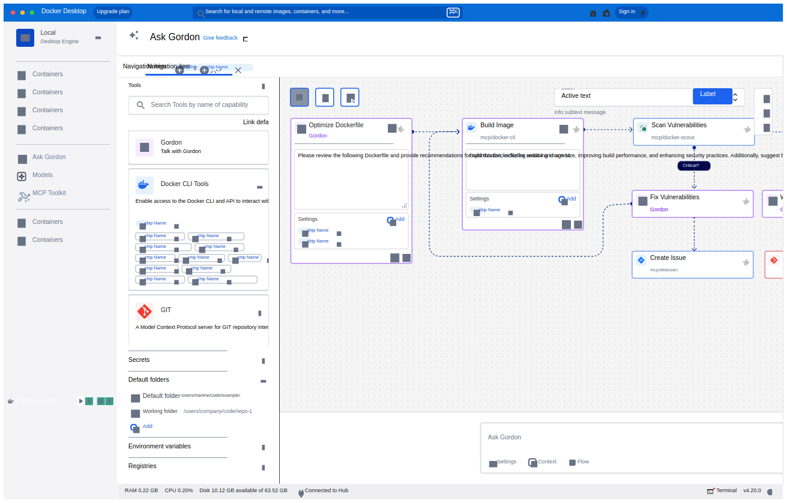
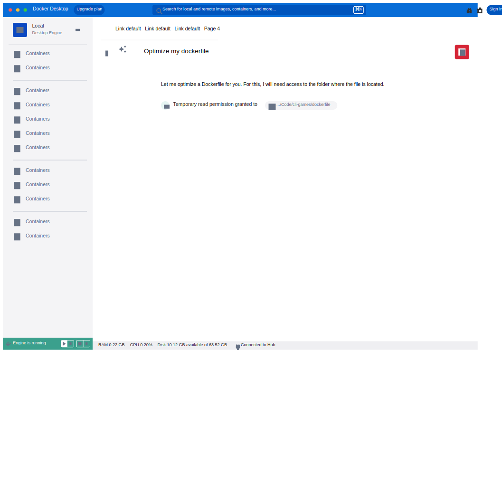

One agent, designed for where developers already work.
At a glance
Part of the origin story. In 2023 I was in the team that created an early concept around an assistant for Docker; it helped make the case for building an agent. Its interaction model carried into Gordon: intent in, command proposed, developer reviews before it runs.
Owned design end to end. The only designer on Gordon from first concept to general availability with free and paid plans.
Set the direction with evidence. Organized and led field research, combined it with CLI usage data, and focused the product on three workflows.
Designed the system, not only the feature. I created and own DDS-CLI, Docker’s CLI design system, still used by Docker Build, Docker Compose and cagent. The CLI / TUI I designed became the base for Gordon in the terminal and for cagent, now docker-agent.
Defined the trust model. Designed how developers review, approve and control an agent that can change their environment.
Extended into the business. Gordon became its own SKU with real paying users. I designed the upgrade path, usage visibility and MCP onboarding, which made Gordon the first place Docker users could test MCP servers.
The problem: Docker knowledge arrives in steps
Running one container is easy. Then come builds, dependencies, networking, volumes, Compose, security and optimization. Each step works until the next layer demands expertise the developer doesn’t have yet.
Documentation answers general questions. It can’t see the developer’s container, project or error. The opportunity was help at the moment of friction, grounded in the developer’s actual situation.
The question I framed for the team: how do developers make progress without first mastering every Docker concept?
Origin: an early concept that became the interaction model
In 2023 I was in the team that created one concept around an assistant for Docker. It made the case for building an agent, and that is why I was brought in to design it.
Three ideas from that concept survived into the shipped product:
Intent in, command out. The developer states a goal (“stop all my containers”), and the agent proposes the exact Docker command.
Review before run. Nothing executes until the developer sees and accepts it. This became the trust model.
Environment as context. A question about a container is tied to that container and its state, not a blank chat.
I then evolved the concept through Docker Ask and Docker WTF / WhaleTF, testing each live with developers.
Gordon, the robot the concept grew into.
Research: choosing where an agent earns its place
A general assistant that answers anything would have been easy to ship and hard to trust. I pushed for focus: find the workflows where help matters most, and design deeply for those.
I organized and led field research with developers and tested early concepts live. I combined it with CLI usage data: the data showed what developers did; the sessions showed why they got stuck. Three workflows earned their place, with optimization alongside them as a follow-on task:
Debug and troubleshoot. Understand why something failed. Design focus: connect the failure to logs, state and a next step.
Build and containerize. Get an app running in Docker. Design focus: make generated configuration understandable and reviewable.
Execute and manage. Complete a Docker operation. Design focus: turn intent into a visible operation the developer can assess.
Situational awareness: context as design material
The core design principle I defined for Gordon was agentic situational awareness: the agent should understand the developer’s situation before they explain it.
Where a request starts tells the agent most of what it needs. “Explain this image” from an image view, “Why did this container exit?” from a failed container, and “Containerize this project” from a working directory are different tasks. Each entry point carries the right context so the developer types less and gets a specific answer. I designed around five layers of context: intent, surface and resource, project scope, runtime state and errors, and Docker knowledge.
Contextual entry points over a blank chat
“The agent should know what I'm looking at before I explain it”
Options
Stay a chat, like most assistants, or go beyond it with entry points embedded where problems happen.
What I chose
Contextual entry points, placed next to failures and resources, with context attached automatically.
Why
People are often vague about what they want, and a chat box puts all the work of explaining on them. Situational awareness lets the agent fill in what the developer didn’t say and work through that vagueness with them.
Trade-off
More engineering per surface, and less of the single-glass-box discoverability a global chat gets for free.
The terminal experience
I did the full UI and UX of the CLI / TUI: a compelling way to work with multiple agents and multiple model providers from the command line. That design was reused in two places: Gordon in the terminal, and cagent (now docker-agent), Docker’s framework for building and running agents. The patterns had to work for Gordon and for agents other teams and developers would build.
The core challenge was translating rich GUI interactions into a terminal without losing clarity. Many agents and providers in one stream; a keyboard model that doesn’t claim every key and fight the developer’s terminal habits; reviewing changes inline; and it all had to work on any OS and any theme, using only the ANSI color palette and basic Unicode for icons.
I didn’t solve those constraints from scratch. Before Gordon, I led UX for Docker’s CLI and created DDS-CLI, the Docker Design System for the command line. Its premise: any point where people and software exchange information is an interface, so the terminal deserves the same care for learnability, discoverability, readability and ease of use as a GUI. Foundations, blocks, interaction patterns and adoption tools, including guidance for Bubbletea and Lipgloss, the libraries engineers build with. DDS-CLI was adopted by Docker Build, Docker Compose and cagent, and is still in use. When Gordon needed a terminal experience, the foundations were already in place.
As of October 2026, docker-agent has about 4,400 GitHub stars and 500 forks, and ships preinstalled in Docker Desktop. The TUI is one of its core features.

Ask Gordon with the tools panel and agent flow canvas (exploration).
One agent, four surfaces
I designed Gordon as one system across four surfaces, not four separate features. Each surface supplies different context and allows different actions, and the experience is honest about those limits.
CLI / TUI. Context: working directory, permitted environment access. Gordon can ask, propose and run actions after approval.
Docker Hub. Context: repository, images, tags, metadata. Answers questions; hands off to Desktop to act.
Docker Docs. Context: the page being read. Explains concepts.
Hub hands off instead of acting. Hub has no access to the local environment, so it answers questions and sends the developer to Desktop for anything that changes their setup. Other teams integrated Gordon into their own products, including Hub and Support; I set the patterns they built on and partnered with the Hub designers to fit them into Hub’s format. One end-to-end task shows the system working: containerizing an app, where Gordon inspects the project, generates Dockerfile and Compose files for review, then builds and runs with approval.
Trust: designing for an agent that can delete things
Gordon can run docker rm, rewrite a Dockerfile, or prune volumes. A wrong action can destroy a developer’s work. I designed the trust model that decides when Gordon acts, when it asks, and what the developer sees before saying yes. The principle: an approval must be a real decision, not a reflex. Every review shows what will run, which resource it affects, and whether it can be undone.
The model has three levels of control: ask every time (the default), session approval, and auto-approve for developers who want speed and accept the risk. Destructive operations get extra safeguards through command classification by danger, so routine reads pass quietly and risky operations demand a deliberate decision.
From approving everything to a command classifier
“An approval must be a real decision, not a reflex”
What I saw
The first version asked approval for every command, from a harmless docker ps to a destructive docker system prune. Permission fatigue set in: when everything asks, developers stop reading and approve by reflex, which defeats the point of asking.
What I changed
We shipped a command classifier with several risk levels. Safe commands run without interrupting, and approval is reserved for commands that change or destroy something. Each prompt now signals real risk.
Result
Less frustration, fewer complaints, and a higher NPS. Specific figures are under NDA; happy to discuss in conversation.

Permission flow: temporary read grant, quiet by design.Permission flow: the operation, the affected resource and the decision, before anything is replaced.
Beyond the interaction: product, business, research ops
Docker’s first hands-on MCP experience. Gordon was the first experience where Docker users could test an MCP server. It was designed as a first-class MCP client, so developers could try their servers inside a real agent before relying on them. Add an MCP server in Docker Desktop, click once, and it’s available in Gordon: no configuration files to edit, and a first-class UI for exploring servers. I designed the onboarding that removes the setup entirely. The broader catalog story lives in the MCP Toolkit case.
Its own product, with paying users. Gordon was sold as its own SKU, with free and paid plans and real paying customers. That made the experience around usage and value a design problem, not just a billing one. I designed usage and budget visibility and the upgrade path, so developers understood their remaining capacity and their next step before hitting a wall.
Research as an ongoing system. Beyond the early field sessions, I built a Qualtrics feedback pipeline and authored a continuous research plan. The team kept learning after launch instead of relying on one round of research.
New chat empty state with suggestions, the shipped onboarding.
Impact
Pilot → GANov 2024 → Jun 2026
~13×step-up at the Ask Gordon launch
~22×monthly request growth
~4,400GitHub stars on docker-agent
Concept to commercial product. From an early internal concept to a GA agent across four surfaces, sold as its own SKU with paying users.
Beyond one product. DDS-CLI is still used by Docker Build, Compose and cagent; the CLI / TUI design became the base for docker-agent, preinstalled in Docker Desktop; Gordon was Docker’s first hands-on MCP experience, and other teams integrated it into their products.
A research-led product strategy. Field research and usage data focused Gordon on debugging, containerization and operations instead of a general chat.
A trust model for agentic actions. The multi-level command classifier ended permission fatigue; the permission pattern became the reference for other agent dialogs across Docker.
Continuous learning built in. A feedback pipeline and research plan that outlived the launch.
Growth reflects many contributors; design was a necessary enabler. “Requests” include background agentic calls. Figures approximate, current to Jul 2026.
Reflection
Designing an agent is designing a relationship of trust. The interface is only part of it. The rest is deciding what the agent knows, when it acts, and how the developer stays in control.